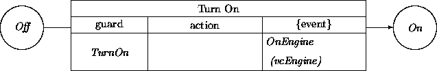

|
Chapter 9: Ensembles |
The bottom-up flavor of the object-oriented paradigm sometimes causes the analysis of large systems to be problematic. While inheritance provides property abstraction and decomposition mechanisms not available in other methods, it does not provide task decomposition mechanisms equivalent to those found in structured analysis (SA). Every process in an SA data flow diagram (DFD) can be ``naturally'' decomposed into a sub-DFD in which the subprocesses together achieve the required top level data transformations. In this chapter, we describe constructs offering these decomposition advantages while at the same time preserving the inheritance and behavior modeling advantages of OO.
Decomposition serves several related needs in software development. Large problems must be subdivided so they may be addressed by multiple analysts. Independence among the pieces of decomposed problems leads to more tractable modeling and reasoning. Also, the practical design and implementation of systems is possible only when these different pieces can be constructed independently of others. We can appreciate the need for decomposition when we look at some of the entities occurring in some large systems:
One cannot deny objecthood to any of these notions. However, their juxtaposition imparts an uneasy feeling. The notions and methods described in previous chapters do not provide the requisite means for decomposing problems into relatively independent pieces. To resolve this situation, we introduce different abstraction levels via special objects, ensembles, whose properties facilitate task decomposition and a top-down analysis mode.
Ensembles share with other objects the modeling apparatus outlined in previous chapters. An ensemble has attributes, has an associated state-transition machine, and has the ability to interact with other objects.
An ensemble differs from the kinds of objects described in Chapter 3 in that it stands for a cluster or bundle of less abstract entities that are each either objects or lower level subensembles. These constituents are described as internal to the ensemble, thus ``hidden'' from other objects. Constituents interact only among each other or within the encompassing ensemble. In other words, the ensemble acts as a gateway or manager between its constituents and the rest of the system and its context.
While the dynamics of an ordinary object may be conceptualized as a sequential machine, an ensemble connotes an entity with internal parallelism. For example, in the bank domain, we can see an account as an object when only one transaction at a time is permitted. On the other hand, a loan department with several loan officers would be an ensemble because its constituents, the loan officers, may be operating in parallel.
An ensemble hides details of its constituent objects and subensembles that are irrelevant outside the ensemble, somewhat analogous to an object in OO programming that hides its internal implementation details. We have previously ignored these aspects of OO encapsulation to focus on the declarative structure of objects and classes. As illustrated below, many objects that we have previously modeled using unencapsulated classes are more appropriately described as ensembles.
In the same way that we like to deal with classes of objects instead of individual objects, we will deal with classes of ensembles instead of individual ensembles.
Attributes can describe the constituent objects and subensembles of an ensemble. Invariant constraints may relate constituents with self of the ensemble to elaborate the relationship between the two. The relationship between an ensemble and its constituents may be thought of as subsuming a particular sense of the PartOf relation.
Additional attributes may describe features that apply to the cluster of constituents as a whole; e.g., the number of constituents. We can also capture information that applies to each of the constituents. Consider a fleet of ships that is represented by an ensemble. The individual ships share the direction in which they are heading. Thus, direction can be introduced as an attribute of the fleet itself.
When an ensemble has nonconstituent attributes, it may have a ``life of its own''. This permits development of a state-transition model. As an example, we can maintain in a fleet an attribute that records the distance of the fleet to its home port. This allows us, for example, to introduce states nearTheHomePort, remoteFromTheHomePort, and farAwayFromTheHomePort, along with the transition refuel that refers to these attributes.
If an ensemble has been equipped with a state-transition model, we can also describe ensemble-to-ensemble and/or ensemble-to-object interactions. For example, an ensemble fleet may communicate with ensemble homeFleet representing the different home ports of the ships in the fleet. An interaction initiated by homeFleet could represent a command for the ships in the fleet to dock into their respective home ports. An example of an ensemble-to-constituent interaction would be the fleet giving a directive specifically to one of its ships.
We use double-vectors to denote ensemble constituents. For example,
we can describe a bank as an ensemble, with its branches (and possibly
other entities) as constituents:
ATM machines may also be described as ensembles. Properties that we have
previously described as attributes may be relabeled as
constituents:
In order for a constituent to ``talk'' to its enclosing ensemble, the constituent needs to have a handle on this ensemble. This applies to any constituent. Thus we can create a class Constituent with the attribute constituentOf of domain Any. We can then introduce a subclass ATMConstituent where the domain is refined to ATM, and then use ATMConstituent as a mixin class. For instance, we can intersect a generic Input class with ATMConstituent to produce our ATMInput (or a superclass version of it); similarly for the other constituents. We show ATMConstituent as a mixin with Input to yield ATMInput.
Similarly, we may consider an ATM to be a constituent of a branch:
(Note that the zero lower multiplicity bound still allows branches not to have an ATM.)
Whether it is wise to see ATMs as constituents of branches is another matter. If we do, all interaction between an ATM and external entities, such as nonlocal accounts, other banks, etc., will have to be mediated by the branch. This will entail exposing and exporting part of the ATM functionality to its branch.
Constituent encapsulation shields the complexity of the inside world of an ensemble. However, sometimes it is necessary or desirable to partially expose the behavior component of a particular constituent.
We do not need special notational apparatus to do this. An ensemble (like any object) can have multiple disjoint transition networks. Exposure of (part of) a constituent can be achieved by ``copying'' and ``elevating'' a coherent part of a transition network of a constituent as a behavior component of the ensemble. The copied fragment must be adjusted for the fact that the ensemble itself does not do the work, but instead forwards incoming triggers and messages to the delegated constituent. Similarly, an event produced by the constituent directed to an external recipient must be modified such that it is directed instead to the ensemble. The ensemble will take care of the subsequent transmission to the intended external recipient.
As an example, consider a vacuum cleaner with constituents switch and engine:

The class OnOffButton is a subclass of the class Button with generic transition network:
This transition network is generic in the sense that both transitions are uncommitted to what they control. For example, the TurnOn transition is not more than:
In general, we do not know how a button is turned on. TurnOn is a placeholder for an incoming event in the guard. Similarly, we do not know what device will be affected by the TurnOn transition.
The subclass OnOffButton of the class Button will know more about the situation in which it participates, so we may specialize the transition. Let us assume that it has an attribute vcEngine representing the motor of the vacuum cleaner. Consequently, its Turn On transition can be refined into:

We assume that the motor has a transition network with a transition OnEngine in order to respond to the event OnEngine(vcEngine).
We may finally return to the main issue of partially exporting the transition network of the OnOffButton constituent to the VacuumCleaner ensemble. Instead of turning on a button (which can be deep down inside a vacuum cleaner), the vacuum cleaner itself is turned on. This should forward the proper effect to the OnOffButton constituent. Thus, we can give the vacuum cleaner a transition network:

However, these transitions are merely forwarding activities. For example, the TurnOn transition expands into:
Several analysis methods approach decomposition by describing ``aggregates'' that are defined using PartOf relations. PartOf(q, p) stands for the notion that an object q is in some sense a component of another object p. These methods treat a PartOf connection as an intrinsic concept to model applications and domains.
Unfortunately, PartOf is in practice quite underdefined. Mathematicians usually assume that PartOf is transitive. Transitivity means:
PartOf(a, b) and PartOf(b, c) implies PartOf(a, c).
However, can we entertain the following?
Plato's stomach is part of Plato, and
Plato is part of the Greek population, thus
Plato's stomach is part of the Greek population.
One can object that this example is not fair. PartOf has been used here in two different senses, physical PartOf and a version of metaphorical PartOf. This kind of error is easy to make, especially when in large systems involving multiple analysts. Most cases do not include quite as obvious misnomers as seen in this example.
Without care, PartOf might mean nothing more than ``is somehow related to''. Nearly any use invites clarification. Do we want PartOf to be transitive? If so, are we prepared to do transitivity inference? Will our development tools help us enforce transitivity? Will an implementation realizing PartOf enforce and exploit transitivity?
Rumbaugh et al [5] provide a more specific interpretation of aggregates: If p is an aggregate of q1, q2, ..., qn, then there is a behavioral connection between p and its constituents (possibly recursively so). To achieve a particular operation O on p, p will forward this operation O to its components qi, and will perhaps perform some integration operation. This requires that all elements reachable from an aggregate via the transitive closure of the PartOf relationship should support this operation.
As an example, consider asking a physical entity e for its weight. When e knows that it is composed of f1, f2, and f3, it can ask for their weights and reply with the sum of their answers. Similarly, consider the task of copying a chapter. A chapter consists of sections. A section consists of paragraphs ... consists of characters. Thus when all the notions in this chain support the notion of copying, then chapters can be copied ``by transitivity''.
This version of aggregation still leaves open several matters of interpretation. Circularity is certainly out. But what about a component being part of more than one aggregate (apart from being implied by transitivity)? Do we want that? Does the destruction of an aggregate imply the destruction of the components? Does the destruction of a component imply the destruction of the aggregate?
Ensembles were defined to provide answers to such questions:
Ensembles are closer to the notion of subsystems developed by Wirfs-Brock et al [7], who motivate them in a similar fashion. However, they treat subsystems as pure analysis constructs, without any implementation consequences:
A subsystem is a set of ... classes (and possibly other subsystems) collaborating to fulfill a common set of responsibilities....Subsystems are a concept used to simplify a design. The complexity of a large application can be dealt with by first identifying subsystems within it, and treating those subsystems as classes....
Subsystems are only conceptual entities; they do not exist during execution.
We take the opposite position about implementation consequences for ensembles. Like all analysis constructs, particular ensembles introduced in the analysis phase may indeed be ``compiled away'' in a subsequent design phase. However, ensembles with regular attributes in addition to constituent attributes can persist into the implementation and become ``managerial'' objects. In fact, ensembles may be seen as declarative analysis-level versions of the communication-closed layered compositional OO design constructs that play a central role in Part II (or vice versa). The encapsulation and forwarding properties of ensembles (which are not necessarily shared by subsystem notions) play central roles in the design phase.
Still, the notion of a subsystem bears a useful additional connotation with respect to development task decomposition, without commitment to other definitional aspects of ensembles. We will continue to use the term when highlighting this sense of decomposition.
Since we have defined an ensemble to be an object (with additional features) and since an object has a single thread of control, we may wonder whether we can model an entire system faithfully as an ensemble. Consider the example of a Branch ensemble having multiple ATMs as constituents. How do we ensure with this setup that multiple interactions can occur at the same time?
We give two answers. First, we can simply expose appropriate parts of the transition networks of the ATMs through the branches to a bank. Alternatively, we can add to the class Branch an attribute user with the same multiplicity [0:M] as for atm and we express through a constraint that useri interacts with atmi. The users may be modeled explicitly as ``stubs''.
Ensembles are generally ``large'' encapsulated objects with a connotation of internal parallelism. They are similar in nature to subsystems. Ensembles introduce multiple layers of abstraction necessary for dealing with large target systems. These multiple layers of abstraction complement the bottom-up flavor of the OO paradigm with a top-down component. This allows a divide-and-conquer development strategy where multiple analysts deal with relatively independent subsystems.
Ensembles encapsulate their constituents. Inner objects and subensembles cannot directly interact with external entities. Ensembles have the exclusive responsibility to create and delete their constituents.
Ensembles were introduced in [2]. Much of Booch's [1] treatment of ``decomposition'' may be seen as an account of ensemble definition. Subsystems are given ample attention in [7], [6] and [4]. Other methods (especially Rumbaugh et al [5]) postpone subsystem development to the design phase. Alternative high-level class constructs that are less geared toward problem decomposition are discussed in [3].